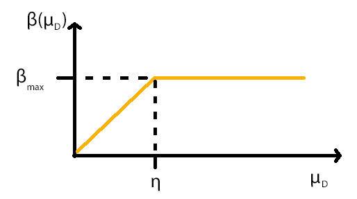

Variable Slope ReLus (VaSReLus)
Or "Feedback Controlled Slope ReLUs (FeCoSReLus)"?
Pyramidal neurons in the cortex process feedforward and feedback input according to the following relationship
[0]:
$$f = g (\mu_S + \alpha \mu_D +\sigma + f \beta(\mu_D) - \theta)$$
where \(f\) is the firing rate of the neuron, \(g\) the gain, \(\mu_S\) the average somatic current (i.e. feedforward input), \(\mu_D\) the average distal
current (i.e. feedback input), \(\alpha\) is an attenuation factor, \(\sigma\) represents fluctuations in the current, \(\theta\) is the firing threshold,
and \(\beta(\mu_D)\) is an increasing function of the dendritic mean current which saturates for values above \(1000\)pA.
We want to model this relationship through a Rectified Linear Unit (ReLu) by simplifying it as much as possible while retaining the property that
the slope of the activation function is controlled by the feedback input. Note that the gain and threshold can be dropped from the equation in any case,
since the slope of a standard ReLu is \(1\) and the threshold is generally modelled through the bias unit. Dropping the summands \(\alpha \mu_D\) and \(\sigma\)
is less justifiable, but since they do not contribute to the core property of slope modification, we will disregard them, arriving at the following
simplified relationship:
$$f = \mu_S + f \beta(\mu_D)$$
Since the frequency \(f\) is the value our activation function should produce, we want to eliminate it from the right side of the equation:
$$\iff f(1-\beta(\mu_D)) = \mu_S$$
$$\iff f = \frac{1}{1-\beta(\mu_D)} \mu_S$$
What remains is the exact definition of \(\beta(\mu_D)\). We know from
[0] that it should be "an increasing function of the dendritic mean current \(\mu\) which saturates for values above \(1000\)pA".
In other words, the function is bounded, i.e. we cannot increase the gain to arbitrarily high values. Accordingly, we need to decide on some maximum value
\(\beta_{max}\) that the function can produce, as well as on a threshold which describes when this maximum value is reached.
The \(1000\)pA described in
[0] is of course meaningless for our purposes, but we still need to define some saturation threshold \(\eta\).
By modelling the part of \(\beta(\mu_D)\) before the saturation threshold as a linear function, we get:
$$\beta(\mu_D) = min\bigg(\frac{\beta_{max}}{\eta} \ \mu_D, \beta_{max}\bigg)$$

As there are no obvious values to assign to \(\beta_{max}\) and \(\eta\), they will be treated as hyperparameters. However, examining how \(\beta_{max}\) affects the
frequency \(f\) gives us some indication as to what values lie in a sensible range. Setting \(\beta_{max}\) to \(1\) results in a division by \(0\) and should
thus be avoided. Giving \(\beta_{max}\) a value greater than \(1\) causes our ReLu to "flip", i.e. a negative slope means that we start with a high frequency
(for no input at all)
which then decreases as the input increases, which does not seem sensible. Now we have narrowed the range down to \(\beta_{max} < 1\), but we should further see
that it is
sufficiently smaller than \(1\), since \(\frac{1}{1-\beta_{max}}\) approaches infinity as \(\beta_{max}\) approaches \(1\) and arbitrarily large slopes do
not appear to be consistent with biological observations.
Hence, as a rule of thumb, to get a sensible \(\beta\) function, we should set $$\beta_{max}\ << 1$$
Since the model \(f = \frac{1}{1-\beta(\mu_D)} \mu_S\) does not take negative values of \(\mu_S\) into account, we need to replace \(\mu_S\) with \(max(0, \mu_S)\), i.e.
the standard ReLu function.
Putting it all together, our modified ReLu takes the following form:
$$f(\mu_S, \mu_D) = \frac{1}{1 - min(\frac{\beta_{max}}{\eta} \ \mu_D, \beta_{max})} \ max(0, \mu_S)$$
A demonstration of the effects of the above mentioned hyperparameters can be found
here.
[0] Larkum, M. E., Senn, W., & Lüscher, H. R. (2004). Top-down dendritic input increases the gain of layer 5 pyramidal neurons. Cerebral Cortex, 14(10), 1059–1070. http://doi.org/10.1093/cercor/bhh065